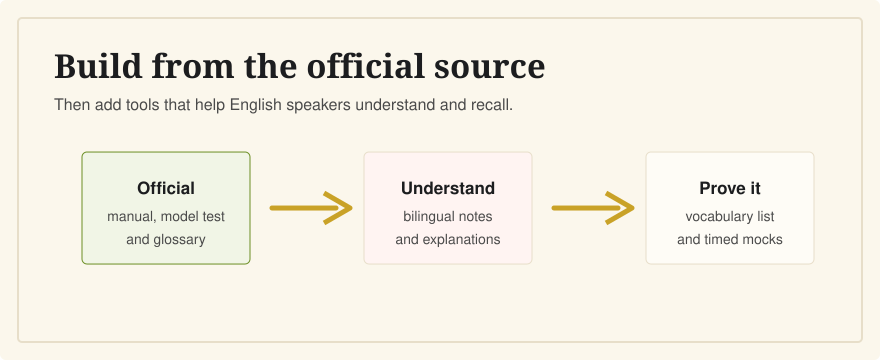

Best CCSE Study Resources for English Speakers
Last verified: June 5, 2026
Start with Instituto Cervantes materials. Then use bilingual tools to make the Spanish questions understandable, not just familiar.

The best CCSE resource is the official current-year Instituto Cervantes material: exam description, manual, model test, glossary, and official app. English-speaking learners can add CCSE English for side-by-side Spanish and English explanations, but it is independent and not official.
1. Official Instituto Cervantes Materials
Use the official preparation page as your source of truth. Instituto Cervantes says candidates do not need a specific course or material, and it publishes free preparation resources including the exam specifications, the current manual, a model test, a guide, and a multilingual glossary.
For 2026, Instituto Cervantes announced that the official CCSE 2026 manual contains the content and questions used in exam sessions from January 2026 during the year. Always check that you are studying the current year's material.
2. The Official CCSE App
Instituto Cervantes describes its official CCSE mobile app as the only official app and says it corresponds to the official CCSE practice questions. If you use it, make sure it is updated for the current question bank.
3. A Bilingual Explanation Tool
Official materials are essential, but they are not always enough for English speakers. If a question mentions the Defensor del Pueblo, the Congreso de los Diputados, or comunidades autónomas, a translation helps only if it also explains the concept.
The official CCSE exam itself is in Spanish, so bilingual resources should support your Spanish reading rather than replace it.
CCSE English is built for that gap: Spanish and English side by side, short plain-English explanations, and practice that keeps the official Spanish in view. It is independent and not affiliated with Instituto Cervantes or the Government of Spain.
4. A Personal Vocabulary List
Keep a short list of recurring civic words. Focus on terms that change the meaning of a question: jefe del Estado, Gobierno, Cortes Generales, derechos, deberes, municipio, and provincia.
5. Timed Mock Exams
The real CCSE is 25 questions in 45 minutes. Timed practice teaches you whether you can read the Spanish quickly enough without leaning on English every time.
A Simple Study Stack
- Use Instituto Cervantes for official rules and materials.
- Use CCSE English to understand questions bilingually.
- Use timed Spanish-only mocks before exam day.
- Use the official portal for registration, dates, results, and certificates.
Related Guides
- What is the CCSE exam?
- What happens on CCSE exam day?
- Do I need Spanish to pass the CCSE?
- How long should I study for the CCSE?
- My experience preparing for the CCSE
Sources
- Instituto Cervantes: CCSE preparation materials
- Instituto Cervantes: publication of the 2026 CCSE manual
- Instituto Cervantes: CCSE exam format
Pair the official materials with bilingual explanations designed for English speakers preparing in Spain.